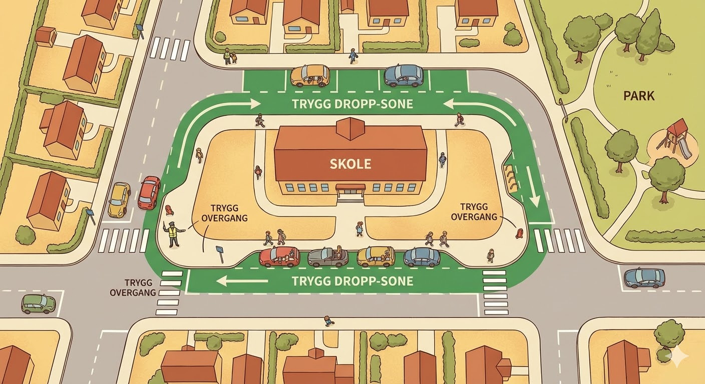

1 Kartlegging av skulevegen (Risikovurdering)
For å forbetre trafikktryggleiken må vi først vite kvar farane ligg. Eit «farleg punkt» på skulevegen oppstår oftast der bilar og mjuke trafikantar kryssar spor, eller der sikta er dårleg. Trykk på korta for å sjå kva du skal leite etter i ditt eige nærmiljø.
2 Hjartesoner i praksis
Paradokset ved skuleporten
Foreldre ønskjer at barna deira skal vere trygge, og difor vel mange å køyre dei heilt fram til skulen. Men når "alle" gjer dette, skaper dei eit enormt trafikkkaos, dårleg sikt og farlege rygge-situasjonar for dei barna som faktisk går.
Slik fungerer ei Hjartesone:
- Bilfritt nærområde: Ein radius rundt skulen (t.d. 300 meter) blir erklært heilt bilfri ved skulestart og skuleslutt.
- Droppsoner unna skulen: Det blir oppretta eigne "droppsoner" (Kiss & Ride) eit stykke vekk, der foreldre lovleg og trygt kan sleppe av barna. Barna går den siste biten.
- Auka folkehelse: Når skuleområdet kjennest trygt, vil fleire velje å gå eller sykle heimanfrå. Det reduserer utslepp og aukar den fysiske aktiviteten.

3 Slik påverkar du (Prosjektmal)
Korleis få politikarane til å lytte?
Å klage over at "krysset er farleg" er sjeldan nok. Viss du vil ha handling frå kommunen, må du skrive eit formelt forslag. Her er malen for korleis de byggjer opp ei god prosjektoppgåve eller eit brev til kommunen.
Trinn 1: Dokumentasjon
Identifiser nøyaktig kvar problemet er. Ta bilete av staden (gjerne når trafikken er som verst). Tel bilar vs. gåande i eit kvarter. Dette vert handfaste bevis du kan vise til.
Trinn 2: Finn årsaka
Kvifor skjer det farlege situasjonar akkurat her? Manglar det spegel for å sjå rundt hekken? Går vegane for strakt slik at farten blir for høg? Er det dårleg belyst?
Trinn 3: Konkret løysingsforslag
Ikkje berre be om at det "blir fiksa". Kom med konkrete tiltak: "Vi foreslår å opprette eit opphøgd gangfelt", "Sette ned fartsgrensa til 30 km/t", eller "Rydde skog på hjørnet for betre sikt".
Trinn 4: Send inn
Bruk ordninga "Min sak" eller send det via elevrådet til teknisk etat i kommunen. Underskriftskampanjar frå skulen kan også hjelpe for å vise støtte.